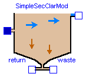

This package just provides a very simple ASM3 secondary clarifier model with no sludge storage, no sludge sedimentation and no use of layers. The model consists of one tank removing all particulate substances.
Main Author: Gerald Reichl Technische Universitaet Ilmenau Faculty of Informatics and Automation Department Dynamics and Simulation of ecological Systems P.O. Box 10 05 65 98684 Ilmenau Germany email: gerald.reichl@tu-ilmenau.de
Copyright (C) 2003, Gerald Reichl
The Modelica package is free software; it can be redistributed and/or modified
under the terms of the Modelica license, see the license conditions
and the accompanying disclaimer in the documentation of package
Modelica in file "Modelica/package.mo".

This component models very simple the secondary clarification process by just using a single fully mixed tank which removes all particulate substances from the effluent and returns the sludge. No sedimentation and compression, etc. is considered (for ASM3).
| Name | Default | Description |
|---|---|---|
| hsc | 4.0 | height of secondary clarifier [m] |
| Asc | 1500.0 | area of secondary clarifier [m2] |
model SimpleSecClarMod "Simple ASM3 Secondary Clarifier Model"
extends WasteWater.Icons.SecClarSimple;
extends WasteWater.ASM3.SecClar.Takacs.Interfaces.ratios;
package SI = Modelica.SIunits;
package WI = WasteWater.ASM3.Interfaces;
package WWU = WasteWater.WasteWaterUnits;
parameter SI.Length hsc=4.0 "height of secondary clarifier";
parameter SI.Area Asc=1500.0 "area of secondary clarifier";
WWU.MassConcentration Xf "total slduge concentration in clarifier feed";
WWU.MassConcentration X "total sludge concentration";
WWU.MassConcentration So "Dissolved oxygen";
WWU.MassConcentration Si "Soluble inert organics";
WWU.MassConcentration Ss "Readily biodegradable substrates";
WWU.MassConcentration Snh "Ammonium";
WWU.MassConcentration Sn2 "Dinitrogen, released by nitrification";
WWU.MassConcentration Snox "Nitrite plus nitrate";
WWU.Alkalinity Salk "Alkalinity, bicarbonate";
WI.WWFlowAsm3in Feed;
WI.WWFlowAsm3out Effluent;
WI.WWFlowAsm3out Return;
WI.WWFlowAsm3out Waste;
equation
// total sludge concentration in clarifier feed
Xf = Feed.Xss;
// ratios of solid components
rXi = Feed.Xi/Xf;
rXs = Feed.Xs/Xf;
rXh = Feed.Xh/Xf;
rXsto = Feed.Xsto/Xf;
rXa = Feed.Xa/Xf;
// ODEof sludge concentration
der(X) = (Feed.Q*Xf - (-(Waste.Q + Return.Q))*X)/(Asc*hsc);
// ODE of soluble components
der(So) = (Feed.Q*Feed.So - (-Effluent.Q)*So - (-(Waste.Q + Return.Q))*So)/(Asc*hsc);
der(Si) = (Feed.Q*Feed.Si - (-Effluent.Q)*Si - (-(Waste.Q + Return.Q))*Si)/(Asc*hsc);
der(Ss) = (Feed.Q*Feed.Ss - (-Effluent.Q)*Ss - (-(Waste.Q + Return.Q))*Ss)/(Asc*hsc);
der(Snh) = (Feed.Q*Feed.Snh - (-Effluent.Q)*Snh - (-(Waste.Q + Return.Q))*Snh)/(Asc*hsc);
der(Sn2) = (Feed.Q*Feed.Sn2 - (-Effluent.Q)*Sn2 - (-(Waste.Q + Return.Q))*Sn2)/(Asc*hsc);
der(Snox) = (Feed.Q*Feed.Snox - (-Effluent.Q)*Snox - (-(Waste.Q + Return.Q))* Snox)/(Asc*hsc);
der(Salk) = (Feed.Q*Feed.Salk - (-Effluent.Q)*Salk - (-(Waste.Q + Return.Q))* Salk)/(Asc*hsc);
// volume flow rates
Feed.Q + Effluent.Q + Return.Q + Waste.Q = 0;
// effluent, solid and soluble components (ASM3)
Effluent.So = So;
Effluent.Si = Si;
Effluent.Ss = Ss;
Effluent.Snh = Snh;
Effluent.Sn2 = Sn2;
Effluent.Snox = Snox;
Effluent.Salk = Salk;
Effluent.Xi = 0.0*X;
Effluent.Xs = 0.0*X;
Effluent.Xh = 0.0*X;
Effluent.Xsto = 0.0*X;
Effluent.Xa = 0.0*X;
Effluent.Xss = 0.0*X;
// return sludge flow, solid and soluble components (ASM3)
Return.So = So;
Return.Si = Si;
Return.Ss = Ss;
Return.Snh = Snh;
Return.Sn2 = Sn2;
Return.Snox = Snox;
Return.Salk = Salk;
Return.Xi = rXi*X;
Return.Xs = rXs*X;
Return.Xh = rXh*X;
Return.Xsto = rXsto*X;
Return.Xa = rXa*X;
Return.Xss = X;
// waste sludge flow, solid and soluble components (ASM3)
Waste.So = So;
Waste.Si = Si;
Waste.Ss = Ss;
Waste.Snh = Snh;
Waste.Sn2 = Sn2;
Waste.Snox = Snox;
Waste.Salk = Salk;
Waste.Xi = rXi*X;
Waste.Xs = rXs*X;
Waste.Xh = rXh*X;
Waste.Xsto = rXsto*X;
Waste.Xa = rXa*X;
Waste.Xss = X;
end SimpleSecClarMod;